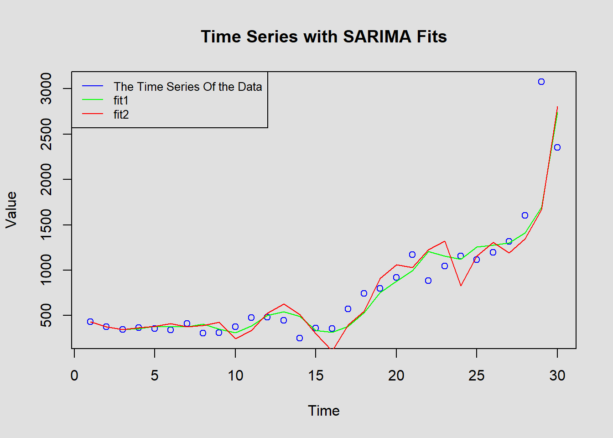
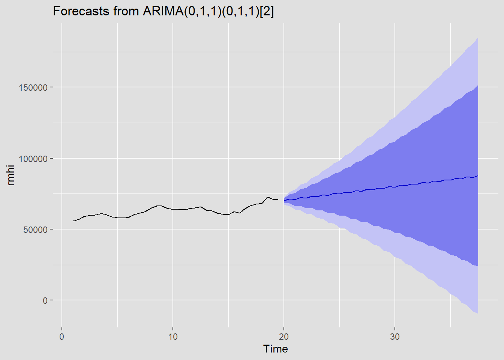
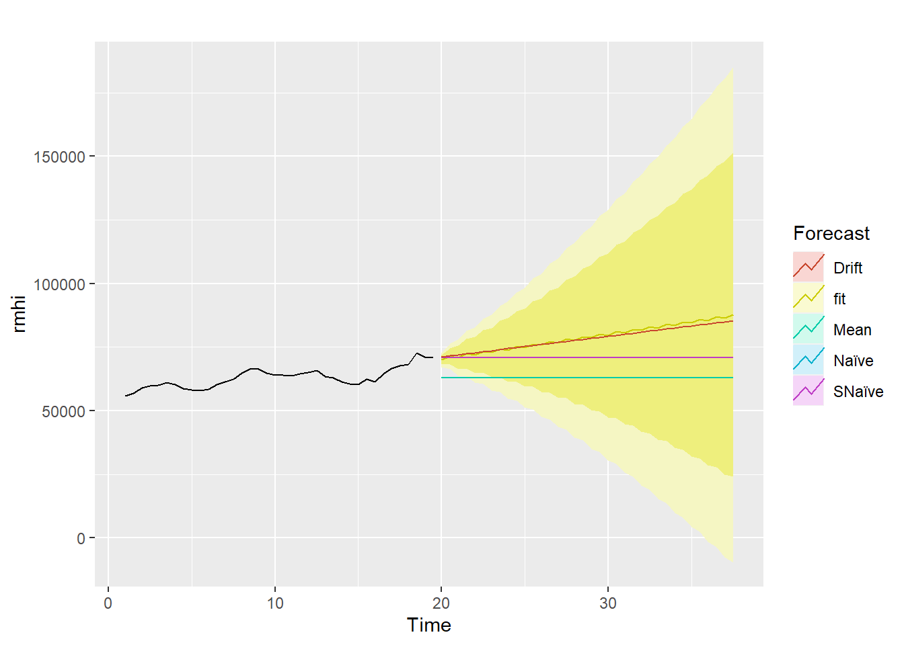

ARMA/ARIMA/SARIMA Models
After Exploratory Data Analysis (EDA), we are going to have a deeper understanding of the time series data by applying different models. This section involves multiple medthods and datasets with different models such as ARMA, ARIMA, SARIMA for us to gain insights and understandings such as ACF, PACF, ADF tests, differencing, and comparision. For these methods, we are going to identify correlations, stationaries, and performance evaluation.
To be more specific, we need to understand the concepts about the models: Certainly! Here’s a brief overview of the ARMA, ARIMA, and SARIMA models with their associated equations:
ARMA:
- Components:
- AR(p): AutoRegressive term of order ( p ). It describes the relationship of the current observation with its previous values.
- MA(q): Moving Average term of order ( q ). It captures the relationship between an observation and the white noise or error terms from previous time points.
- Equation: [ X_t = c + 1X{t-1} + 2X{t-2} + + pX{t-p} + 1a{t-1} + 2a{t-2} + + qa{t-q} + a_t ] where ( a_t ) is white noise.
- Components:
ARIMA:
- Components:
- AR(p): AutoRegressive term.
- I(d): Integrated term of order ( d ). It represents the number of differences needed to make the series stationary.
- MA(q): Moving Average term.
- Equation: Once the series is differenced ( d ) times and becomes stationary, its ARIMA representation becomes the same as ARMA, but applied to the differenced series.
- Components:
SARIMA:
- Components:
- AR(p): AutoRegressive term.
- I(d): Integrated term.
- MA(q): Moving Average term.
- SAR(P): Seasonal AutoRegressive term of order ( P ).
- SI(D): Seasonal Integrated term of order ( D ). It indicates the number of seasonal differences required.
- SMA(Q): Seasonal Moving Average term of order ( Q ).
- Equation: The SARIMA model combines both non-seasonal and seasonal components. Once both seasonal and non-seasonal differencing are applied (if needed), the SARIMA equation becomes an extension of the ARMA equation but with additional seasonal terms. [ X_t = c + 1X{t-1} + + pX{t-p} + 1a{t-1} + + qa{t-q} + 1X{t-P} + + PX{t-PS} + 1a{t-Q} + + Qa{t-QS} + a_t ] where ( S ) represents the seasonal period and ( a_t ) is white noise.
- Components:
ARMA/ARIMA Analysis (With Covid-19 Impacts)
The Household Saving Data Analysis
Due to the differencing methods should be used when the dataset is not stationary. Here, as in EDA section, the household income data analysis provides results that this dataset is not stationary. To have a brief recap, I have provided the orginal dataset and the acf and pacf plots.

ACF & PACF

From here, we can see that the dataset has a correlation, which also means that it is not stationary. In order to prove this conclusion, we utilize the adf test to ensure the results are the same.
Validation with ADF Test
Warning in adf.test(df$W398RC1A027NBEA): p-value greater than printed p-value
Augmented Dickey-Fuller Test
data: df$W398RC1A027NBEA
Dickey-Fuller = 0.038046, Lag order = 3, p-value = 0.99
alternative hypothesis: stationaryBased on the result, we can see that the p-value is greater than the thershold value, this means that we fail to reject the Null hypothesis. The time series dataset is not stationary.
Then, to explore more, we utilize detrended and log-transformation to see about the patterns
Detrended and Log-transformed

From here, we can see that after detrending and transforming, the household Saving remains fluctuations espectially during 2020 period, which could be the cause of the Covid-19. In addition, Log-transformed time series, in order to remove the hetroscadastisity, we can see that the trend remains. I think the reason is possibly because log-transformation can assuage issues related to non-constant variance, which means that the inherent trend within the data may persist.
Test it stationary again
Augmented Dickey-Fuller Test
data: log_transformed_data$LogTransformed
Dickey-Fuller = -1.934, Lag order = 3, p-value = 0.598
alternative hypothesis: stationaryAfter the detrending and transformating, we can see that it is still not statinary. Which means that further action still needs to be done. I utilize differencing methods.
Make it Stationary by using differencing
We will try the second order differencing to see the result since the dataset seems to be overly not stationary.

After the second orders of differencing, we can see the changes regarding the plots as a whole.
Augmented Dickey-Fuller Test
data: diff(df$W398RC1A027NBEA, differences = 2)
Dickey-Fuller = -2.9811, Lag order = 3, p-value = 0.1972
alternative hypothesis: stationaryHowever, the second order of differencing still cannot make it stationary. We need to do more. However, we should reach the limit with the third order since we do not want to over differencing the dataset.
Third Differencing

Augmented Dickey-Fuller Test
data: diff(df$W398RC1A027NBEA, differences = 3)
Dickey-Fuller = -5.488, Lag order = 2, p-value = 0.01
alternative hypothesis: stationaryNow, as we can see, the p-value is now smaller than the significant level. The dataset is stationary.
Evaluate the values for p & q
Autocorrelations of series 'diff_series', by lag
0 1 2 3 4 5 6 7 8 9 10
1.000 -0.340 -0.006 0.060 -0.087 -0.038 0.241 -0.349 0.214 -0.036 -0.050
11 12 13 14
0.007 0.065 -0.115 0.150
Partial autocorrelations of series 'diff_series', by lag
1 2 3 4 5 6 7 8 9 10 11
-0.340 -0.137 0.013 -0.069 -0.100 0.211 -0.232 0.062 -0.004 -0.007 -0.053
12 13 14
0.017 0.015 0.007 
From the PACF plot, it seems that after the 1st lag, the correlation values drop into insignificance. Thus, we might consider p = 1 for the AR component. From the ACF plot you provided, the correlation seems to cut off after the 1st lag as well. Hence, you might consider q = 2 for the MA component. And we use d = 3 since we utilized third orders of differencing.
Fit Model
After we determing our parameters, we can start fitting the models.
Series: diff
ARIMA(1,3,2)
Coefficients:
ar1 ma1 ma2
-0.7911 -1.8982 0.9996
s.e. 0.2096 0.4024 0.4155
sigma^2 = 919174: log likelihood = -202.53
AIC=413.07 AICc=415.17 BIC=417.78
Training set error measures:
ME RMSE MAE MPE MAPE MASE ACF1
Training set -104.3663 845.5254 428.3458 153.1425 163.6866 0.695587 -0.3066825From here, we get a summary about the aic and bic values.
Equation of the Model
Given the specified values (p = 1), (q = 2), and (d = 3), we can write out the ARIMA(1,3,2) model equation using the general equation based on the results of the model:
[ X_t = c + 1X{t-1} + 1a{t-1} + 2a{t-2} + a_t ]
In my case the third difference is represented as ( ^3 Y_t = Y_t - 0.7911Y_{t-1} - 1.8982Y_{t-2} + 0.9996Y_{t-3} ). The ARIMA equation provided is built upon this differenced series.
Model diagnostics
Model diagnostics are very important for us to determine the performance of the parameters we choose. By setting different parameters, we can have a more general view and understanding regarding the model.

Call:
arima(x = arma14, order = c(p, 3, q))
Coefficients:
ar1 ma1 ma2
-0.4402 -0.2544 -0.0395
s.e. 0.0377 0.0394 0.0262
sigma^2 estimated as 1.003: log likelihood = -14202.19, aic = 28412.39| p | d | q | AIC | BIC | AICc |
|---|---|---|---|---|---|
| 2 | 1 | 2 | 422.0558 | 430.2596 | 425.8740 |
| 2 | 2 | 2 | 413.6960 | 420.3570 | 416.4232 |
| 2 | 3 | 2 | 405.0099 | 411.4891 | 407.8670 |
| 2 | 1 | 3 | 423.9044 | 433.4754 | 429.2377 |
| 2 | 2 | 3 | 411.0795 | 419.0727 | 415.0795 |
| 2 | 3 | 3 | 407.0239 | 414.7989 | 411.2239 |
| 2 | 1 | 4 | 425.8596 | 436.7980 | 433.0596 |
| 2 | 2 | 4 | 413.0766 | 422.4020 | 418.6766 |
| 3 | 1 | 2 | 423.9406 | 433.5117 | 429.2739 |
| 3 | 2 | 2 | 415.6154 | 423.6086 | 419.6154 |
| 3 | 3 | 2 | 406.9074 | 414.6824 | 411.1074 |
| 3 | 1 | 3 | 426.0532 | 436.9916 | 433.2532 |
| 3 | 2 | 3 | 413.0776 | 422.4030 | 418.6776 |
| 3 | 1 | 4 | 427.4187 | 439.7243 | 436.8923 |
| 4 | 1 | 2 | 425.4315 | 436.3699 | 432.6315 |
| 4 | 2 | 2 | 415.1668 | 424.4922 | 420.7668 |
| 4 | 1 | 3 | 427.4290 | 439.7347 | 436.9027 |
From the table, we can see that p=2, q=2 is the best, which are different from my assumption. The reason is that although there are spike and great change at lag 1. For lag 2, it also have correpondsing spike and change. Therefore, the new parameter sets are reasonable.
p d q AIC BIC AICc
3 2 3 2 405.0099 411.4891 407.867 p d q AIC BIC AICc
3 2 3 2 405.0099 411.4891 407.867 p d q AIC BIC AICc
3 2 3 2 405.0099 411.4891 407.867In addition, we can see that for all AIC, BIC, and AICc values, these parameter sets are all the best.
Model Compare
Now, to be more specific, we compare the two different parameter sets: (2,3,2) and (1,3,2):


Here, we can see that the two fits are actuaclly simiarly within our expecations, but overall, the second fit is better as indicated from model diagoosis.
Forecasting for the dataset using the best parameters
Point Forecast Lo 80 Hi 80 Lo 95 Hi 95
31 4278.130 3813.470 4742.791 3567.493 4988.767
32 3458.665 2921.482 3995.847 2637.115 4280.215
33 5473.540 4496.374 6450.705 3979.094 6967.985
34 4679.682 3529.482 5829.881 2920.603 6438.760
35 6742.303 5099.447 8385.159 4229.772 9254.834
36 5988.600 4080.957 7896.243 3071.112 8906.088
37 8093.980 5637.246 10550.714 4336.729 11851.230
38 7382.141 4577.705 10186.577 3093.127 11671.156
39 9529.693 6118.454 12940.932 4312.654 14746.732
40 8859.921 5024.086 12695.756 2993.518 14726.325
From the above graph, we can note that the forecasted number follows a pattern with time period from (28 to 30). This performance is not what was expected and, hence, it is possible that the models are not able to capture the underlying patterns in the data. However, the model did capture the upward trending and certain seasonality. This can be due to a variety of reasons, such as insufficient data and the models not being complex enough. Therefore, further action such as benchmarking should be made to compare the models to see if the model performs well.
BENCHMARK
Now for benchmarking, we compare the model with the base models such as meanf, naive model, and rwf model.
The meanf model with residual plot
Ljung-Box test
data: Residuals from Mean
Q* = 42.947, df = 6, p-value = 1.195e-07
Model df: 0. Total lags used: 6The Arima model

Series: df$W398RC1A027NBEA
ARIMA(0,1,1)(0,0,1)[4]
Coefficients:
ma1 sma1
-0.2008 -0.0093
s.e. 0.1702 0.2238
sigma^2 = 111877: log likelihood = -208.7
AIC=423.4 AICc=424.36 BIC=427.5
Training set error measures:
ME RMSE MAE MPE MAPE MASE ACF1
Training set 83.97069 317.3154 158.0274 3.851463 17.2448 0.9308784 -0.111543Accuracy of the fitted models
ME RMSE MAE MPE MAPE MASE ACF1
Training set 32.73409 312.2898 183.7851 -1.612877 23.50814 1.082607 -0.08540118Time Series:
Start = 31
End = 50
Frequency = 1
[1] 4278.130 3458.665 5473.540 4679.682 6742.303 5988.600 8093.980
[8] 7382.141 9529.693 8859.921 11049.575 10421.894 12653.642 12068.054
[15] 14341.896 13798.400 16114.336 15612.934 17970.962 17511.654Accuracy of the based models
ME RMSE MAE MPE MAPE MASE
Training set -2.643441e-14 635.2356 470.2565 -51.63239 78.34547 1 ME RMSE MAE MPE MAPE MASE ACF1
Training set 66.26655 330.1867 169.7616 2.867066 18.06051 1 -0.2730483 ME RMSE MAE MPE MAPE MASE
Training set -2.350993e-14 323.4687 166.4792 -9.624318 20.73922 0.9806647
ACF1
Training set -0.2730483Based on the results, it is clear that the fitted model has the lowest error. our fitted model is performing better than these simple benchmark methods.


Based on the plot, we can see that Our fit is better than the benchmark methods by capturing more about the seaonal pattern and trending.
The Median House Sale Price Data Analysis
Due to the differencing methods should be used when the dataset is not stationary. Here, as in EDA section, the House Sale Price data analysis provides results that this dataset is not stationary. To have a brief recap, I have provided the orginal dataset and the acf and pacf plots.

ACF & PACF


From here, we can see that the dataset has a correlation, which also means that it is not stationary. In order to prove this conclusion, we utilize the adf test to ensure the results are the same.
Validation with ADF Test
Augmented Dickey-Fuller Test
data: df$MSPUS
Dickey-Fuller = -2.6866, Lag order = 6, p-value = 0.287
alternative hypothesis: stationaryBased on the result, we can see that the p-value is greater than the thershold value, this means that we fail to reject the Null hypothesis. The time series dataset is not stationary.
Then, to explore more, we utilize detrended and log-transformation to see about the patterns
Detrended and Log-transformed


From here, we can see that after detrending and dfferencing, the household sale price remains fluctuations espectially during 2020 period, which could be the cause of the Covid-19. In addition, Log-transformed time series, in order to remove the hetroscadastisity, we can see that the trend remains. I think the reason is possibly because log-transformation can assuage issues related to non-constant variance, which means that the inherent trend within the data may persist.
Test it stationary again
Augmented Dickey-Fuller Test
data: log_transformed_data$LogTransformed
Dickey-Fuller = -1.7007, Lag order = 6, p-value = 0.7017
alternative hypothesis: stationaryAfter the detrending and transformating, we can see that it is still not statinary. Which means that further action still needs to be done. I utilize differencing methods.
Make it Stationary by using differencing

After the first order of differencing, we can see the changes regarding the plots as a whole.
Augmented Dickey-Fuller Test
data: diff(df$MSPUS, differences = 1)
Dickey-Fuller = -6.3462, Lag order = 6, p-value = 0.01
alternative hypothesis: stationaryWe can see that, after differencing, the dataset becomes stationary. Now, we can fit into the model with different parameters.
Autocorrelations of series 'diff_series', by lag
0 1 2 3 4 5 6 7 8 9 10
1.000 -0.625 0.098 0.079 -0.054 0.021 0.024 -0.095 0.071 0.094 -0.222
11 12 13 14 15 16 17 18 19 20 21
0.106 0.112 -0.158 0.057 0.021 -0.059 0.114 -0.106 -0.050 0.225 -0.228
22 23
0.130 -0.083 
Partial autocorrelations of series 'diff_series', by lag
1 2 3 4 5 6 7 8 9 10 11
-0.625 -0.481 -0.278 -0.165 -0.069 0.047 -0.070 -0.119 0.136 -0.028 -0.186
12 13 14 15 16 17 18 19 20 21 22
0.022 0.044 -0.013 0.008 -0.042 0.052 0.040 -0.118 0.082 -0.035 0.115
23
-0.010 
From the PACF plot, it seems that after the 1st lag, the correlation values drop into insignificance. Thus, we might consider p = 1 for the AR component. From the ACF plot you provided, the correlation seems to cut off after the 1st lag as well. Hence, you might consider q = 1 for the MA component. And we use d = 1 since we utilized third orders of differencing.
Fit model
Series: diff
ARIMA(1,1,1)
Coefficients:
ar1 ma1
0.0092 -0.9827
s.e. 0.0663 0.0133
sigma^2 = 46013474: log likelihood = -2458.55
AIC=4923.1 AICc=4923.2 BIC=4933.54
Training set error measures:
ME RMSE MAE MPE MAPE MASE ACF1
Training set 542.7894 6740.971 3865.506 -Inf Inf 0.6808965 -0.01153987Equation of the Model
Given the specified values (p = 1), (q = 1), and (d = 1), we can write out the ARIMA(1,1,1) model equation using the general equation based on the results of the model:
[ X_t = c + 1X{t-1} + 1a{t-1} + 2a{t-2} + a_t ]
In my case the third difference is represented as ( ^1 X_t = X_t + 0.0092X_{t-1} - 0.9827Y_{t-1} ). The ARIMA equation provided is built upon this differenced series.
Model diagnostics

Call:
arima(x = arma14, order = c(p, 1, q))
Coefficients:
ma1
-0.1934
s.e. 0.0098
sigma^2 estimated as 1.003: log likelihood = -14202.07, aic = 28408.15| p | d | q | AIC | BIC | AICc |
|---|---|---|---|---|---|
| 1 | 1 | 1 | 4938.630 | 4952.569 | 4938.799 |
| 1 | 2 | 1 | 4923.100 | 4933.542 | 4923.202 |
| 1 | 3 | 1 | 4976.098 | 4986.528 | 4976.200 |
| 1 | 1 | 2 | 4937.123 | 4954.547 | 4937.379 |
| 1 | 2 | 2 | 4924.722 | 4938.645 | 4924.892 |
| 1 | 3 | 2 | 4915.708 | 4929.614 | 4915.879 |
| 1 | 1 | 3 | 4921.957 | 4942.866 | 4922.316 |
| 1 | 2 | 3 | 4926.078 | 4943.482 | 4926.335 |
| 1 | 3 | 3 | 4918.622 | 4936.004 | 4918.879 |
| 2 | 1 | 1 | 4938.832 | 4956.256 | 4939.087 |
| 2 | 2 | 1 | 4933.117 | 4947.039 | 4933.287 |
| 2 | 3 | 1 | 4931.865 | 4945.771 | 4932.036 |
| 2 | 1 | 2 | 4918.505 | 4939.414 | 4918.864 |
| 2 | 2 | 2 | 4924.928 | 4942.331 | 4925.185 |
| 2 | 3 | 2 | 4923.269 | 4940.651 | 4923.526 |
| 2 | 1 | 3 | 4918.739 | 4943.132 | 4919.219 |
| 2 | 2 | 3 | 4903.774 | 4924.657 | 4904.134 |
| 2 | 3 | 3 | 4913.868 | 4934.727 | 4914.230 |
From the table, we can see that p=2, q=2 is the best, which are different from my assumption. The reason is that although there are spike and great change at lag 1. For lag 2, it also have correpondsing spike and change. In addition, since we used first order differencing, the value for d is not the same. By using higher d, the dataset can be more stationary for the model but has the potential of over differencing. Therefore, the new parameter sets are reasonable as well as the initial assumption.
p d q AIC BIC AICc
17 2 2 3 4903.774 4924.657 4904.134 p d q AIC BIC AICc
17 2 2 3 4903.774 4924.657 4904.134 p d q AIC BIC AICc
17 2 2 3 4903.774 4924.657 4904.134Since we only used 1 differencing, we can see that for all AIC, BIC, and AICc values, these parameter sets are all the best.
Model Compare
Now, to be more specific, we compare the two different parameter sets: (2,2,3) and (1,1,1):


Here, we can see that the two fits are actuaclly simiarly within our expecations. The difference is that we used first order differencing but the model used second order.
Forecasting for the dataset
Point Forecast Lo 80 Hi 80 Lo 95 Hi 95
243 415627.1 406980.8 424273.4 402403.7 428850.4
244 415720.2 403091.1 428349.3 396405.7 435034.7
245 416226.1 400354.8 432097.4 391953.1 440499.2
246 417033.1 398322.0 435744.1 388416.9 445649.2
247 418059.5 396783.9 439335.2 385521.2 450597.8
248 419246.0 395615.0 442877.1 383105.4 455386.6
249 420549.3 394731.0 446367.6 381063.5 460035.0
250 421937.7 394071.9 449803.4 379320.7 464554.7
251 423388.1 393593.8 453182.5 377821.6 468954.7
252 424883.9 393263.4 456504.3 376524.6 473243.1
253 426412.6 393055.6 459769.6 375397.5 477427.7
254 427965.4 392950.6 462980.2 374415.0 481515.9
255 429535.8 392933.2 466138.3 373557.0 485514.5
256 431118.9 392991.1 469246.7 372807.5 489430.4
257 432711.4 393114.6 472308.3 372153.3 493269.6
258 434310.7 393295.7 475325.8 371583.7 497037.8
259 435915.0 393528.0 478302.1 371089.6 500740.4
260 437522.9 393806.0 481239.8 370663.7 504382.1
261 439133.4 394125.3 484141.5 370299.5 507967.4
262 440745.9 394482.2 487009.6 369991.7 511500.1
263 442359.7 394873.3 489846.2 369735.5 514984.0
264 443974.6 395296.0 492653.3 369527.0 518422.2
265 445590.3 395747.7 495432.8 369362.6 521817.9
266 447206.4 396226.4 498186.4 369239.2 525173.6
267 448823.0 396730.3 500915.7 369154.1 528491.9
268 450439.9 397257.7 503622.1 369104.7 531775.0
269 452056.9 397807.1 506306.8 369089.0 535024.9
270 453674.2 398377.3 508971.1 369104.9 538243.5
271 455291.5 398967.0 511616.0 369150.6 541432.4
272 456908.9 399575.2 514242.7 369224.5 544593.3
273 458526.4 400200.9 516851.9 369325.2 547727.6
274 460143.9 400843.2 519444.6 369451.3 550836.5
275 461761.5 401501.3 522021.6 369601.6 553921.4
276 463379.1 402174.5 524583.6 369774.8 556983.3
277 464996.6 402862.1 527131.2 369970.0 560023.3
278 466614.3 403563.4 529665.1 370186.3 563042.3
279 468231.9 404277.8 532185.9 370422.6 566041.2
280 469849.5 405004.8 534694.2 370678.1 569020.9
281 471467.1 405743.9 537190.4 370952.1 571982.2
282 473084.8 406494.5 539675.0 371243.8 574925.7
283 474702.4 407256.4 542148.4 371552.6 577852.2
284 476320.0 408028.9 544611.1 371877.8 580762.3
285 477937.7 408811.8 547063.6 372218.7 583656.6
286 479555.3 409604.6 549506.0 372574.9 586535.7
287 481172.9 410407.0 551938.8 372945.8 589400.0
288 482790.6 411218.8 554362.4 373330.9 592250.2
289 484408.2 412039.5 556776.9 373729.8 595086.6
290 486025.8 412868.9 559182.8 374141.9 597909.8
291 487643.5 413706.7 561580.3 374566.9 600720.1
292 489261.1 414552.6 563969.7 375004.3 603518.0From the above graph, we can note that the forecasting captures the trending very well. This performance is within expectation. Now, we can determine whether the fit is actually better than the base models through benchmarking.
BENCHMARK
Now for benchmarking, we compare the model with the base models such as meanf, naive model, and rwf model.
The meanf model with residual plot
Ljung-Box test
data: Residuals from Mean
Q* = 1986.7, df = 10, p-value < 2.2e-16
Model df: 0. Total lags used: 10The Arima model

Series: df$MSPUS
ARIMA(0,1,1)(0,0,1)[4]
Coefficients:
ma1 sma1
0.0210 0.1671
s.e. 0.0665 0.0793
sigma^2 = 47248340: log likelihood = -2470.36
AIC=4946.73 AICc=4946.83 BIC=4957.18
Training set error measures:
ME RMSE MAE MPE MAPE MASE ACF1
Training set 1355.307 6831.004 4055.777 1.052941 2.484314 0.9922265 -0.04153127Accuracy of the fitted models
ME RMSE MAE MPE MAPE MASE
Training set 2.720481 6690.746 3914.234 -0.9087146 2.734111 0.9575986
ACF1
Training set -0.05135495Time Series:
Start = 243
End = 262
Frequency = 1
[1] 415627.1 415720.2 416226.1 417033.1 418059.5 419246.0 420549.3 421937.7
[9] 423388.1 424883.9 426412.6 427965.4 429535.8 431118.9 432711.4 434310.7
[17] 435915.0 437522.9 439133.4 440745.9Accuracy of the based models
ME RMSE MAE MPE MAPE MASE
Training set 3.001896e-12 110997.1 92601.82 -122.4252 153.9077 1 ME RMSE MAE MPE MAPE MASE ACF1
Training set 1652.697 6932.02 4087.552 1.2553 2.554247 1 0.0208634 ME RMSE MAE MPE MAPE MASE
Training set -4.089888e-12 6732.124 4019.955 -1.162417 2.944873 0.9834627
ACF1
Training set 0.0208634Based on the results, it is clear that the fitted model has the lowest error. our fitted model is performing better than these simple benchmark methods.

Based on the plot, we can see that Our fit is better than the benchmark methods by capturing more about the trending pattern.
SARIMA Analysis (Before Covid-19)
GDP Deflator SARIMA Analysis
Before Covid Period
Code
gdp_df <- ts(df$A191RI1Q225SBEA[1:295],frequency = 4)
gdp_df Qtr1 Qtr2 Qtr3 Qtr4
1 5.8 6.9 10.2 3.2
2 3.6 7.6 1.2 -2.1
3 -3.9 -1.8 0.0 -0.6
4 1.3 9.0 7.7 15.3
5 2.7 0.2 4.7 -0.2
6 0.5 4.6 1.1 0.1
7 0.8 1.7 0.7 1.3
8 0.4 0.5 1.1 1.9
9 1.7 2.8 4.0 4.1
10 2.4 5.1 1.6 5.6
11 2.8 2.4 0.3 4.4
12 1.2 2.5 1.9 0.9
13 0.6 1.5 1.6 1.6
14 1.0 1.4 1.2 0.9
15 0.9 1.0 1.3 2.1
16 0.7 0.8 0.8 1.8
17 0.7 0.5 3.3 1.3
18 0.9 1.6 1.8 2.0
19 1.8 1.6 2.8 2.6
20 3.3 3.9 3.4 1.7
21 2.1 3.9 4.5 4.5
22 4.3 4.0 5.8 4.2
23 5.2 5.7 5.3 5.7
24 5.7 3.3 5.4 6.2
25 5.4 4.1 3.4 6.2
26 2.5 3.9 5.2 4.7
27 6.3 8.0 8.2 7.8
28 9.8 12.2 12.3 9.4
29 6.1 7.3 6.9 4.3
30 4.1 5.3 7.4 6.6
31 5.8 5.0 8.9 6.0
32 7.9 7.0 8.4 7.5
33 10.2 9.0 7.6 8.7
34 9.9 9.2 10.8 11.0
35 8.2 7.7 7.1 5.6
36 5.3 5.8 4.2 3.1
37 3.0 4.3 3.1 4.1
38 3.5 3.6 3.0 4.0
39 2.6 2.4 2.3 2.0
40 1.5 1.7 2.2 2.6
41 2.8 3.1 3.2 3.2
42 4.0 4.9 3.5 4.2
43 4.3 3.0 2.9 4.4
44 4.6 3.5 3.0 4.0
45 3.0 3.2 2.4 1.5
46 2.4 2.0 2.8 2.3
47 2.4 2.4 2.2 1.9
48 1.9 2.3 2.2 2.2
49 1.9 2.0 1.9 1.9
50 1.7 1.3 2.2 2.4
51 0.8 1.7 1.3 0.6
52 0.9 1.7 1.1 1.3
53 1.5 1.4 2.2 2.7
54 2.5 2.4 2.2 2.6
55 2.4 1.6 1.3 1.3
56 1.4 1.9 2.3 2.0
57 1.4 2.3 2.5 2.9
58 3.3 2.6 3.1 3.2
59 2.9 3.7 3.3 2.8
60 3.6 2.8 1.5 3.9
61 2.7 2.1 1.7 1.4
62 2.0 3.1 1.0 -0.2
63 -0.7 0.4 1.3 1.1
64 2.0 1.2 2.4 2.1
65 2.7 2.5 0.5 2.4
66 1.6 2.1 2.0 1.6
67 1.1 1.9 2.4 1.7
68 2.3 1.8 0.7 -0.1
69 2.2 1.2 0.0 -0.3
70 2.9 1.1 2.1 2.1
71 1.3 2.0 2.8 2.5
72 3.5 1.4 1.8 1.6
73 2.2 1.3 1.5 1.6
74 -1.5 3.5 2.6 Code
library(ggplot2)
ggplot(data = df, aes(x = DATE, y = A191RI1Q225SBEA)) +
geom_line(color = "DarkViolet") +
labs(title = "Time Series Plot of GDP Deflator",
x = "Date",
y = "GDP Deflator") +
theme_minimal() +
theme(panel.background = element_rect(fill = "#E0E0E0"),
panel.grid.major = element_line(color = "grey", size = 0.1),
panel.grid.minor = element_line(color = "grey", size = 0.05),
plot.background = element_rect(fill = "#E0E0E0"))Check Decomposition
Code
# Decompose the time series data
dec <- decompose(gdp_df, type = "multiplicative") # Choose either "additive" or "multiplicative"
# Set the graphical parameters for the plot
par(bg = "#E0E0E0", col.axis = "#E0E0E0", col.lab = "black", col.main = "black", col.sub = "black")
# Plot the decomposed object
plot(dec)Code
# Reset the graphical parameters to default
par(bg = "white", col.axis = "black", col.lab = "black", col.main = "black", col.sub = "black")Check Lag Plot
Code
gglagplot(gdp_df, do.lines=FALSE, set.lags = c(4, 8, 12, 16))Seasonal Difference AND ACF & PACF
This shows seasonality. Also the lag plot shows higher correlation at Seasonal lag 4 relatively.
Code
ts_plot <- autoplot(gdp_df) +
labs(title = "Time Series Plot ") +
theme(
panel.background = element_rect(fill = "#E0E0E0", color = "#E0E0E0"),
plot.background = element_rect(fill = "#E0E0E0", color = "#E0E0E0")
)
# Extract the ACF and PACF plots without the theme
acf_plot <- ggAcf(diff(diff(gdp_df, lag=4), differences = 1)) +
labs(title = "ACF for first Order of Differencing and Seasonal Differenceing") +
theme(
panel.background = element_rect(fill = "#E0E0E0", color = "#E0E0E0"),
plot.background = element_rect(fill = "#E0E0E0", color = "#E0E0E0")
)
pacf_plot <- ggPacf(diff(diff(gdp_df, lag=4), differences = 1)) +
labs(title = "PACF for first Orders of Differencing and Seasonal Differenceing") +
theme(
panel.background = element_rect(fill = "#E0E0E0", color = "#E0E0E0"),
plot.background = element_rect(fill = "#E0E0E0", color = "#E0E0E0")
)
# Combine the plots
grid.arrange(ts_plot, acf_plot, pacf_plot, ncol = 1) 
Most spikes are within range, it is stationary. ACF Plot :
The sharp drop after lag 1 and some lags across the range. This gives us q = 1,2. Since there’s a noticeable autocorrelation at lag 4, this suggests a seasonal component. The seasonal component in the ACF plot shows a sharp decline after lag 4, which implies Q = 1. PACF Plot:
The sharp drop after lag 1 in the PACF plot indicates a possible AR(1) process. This gives us p = 1. The seasonal component in the PACF plot also has a significant spike at lag 4, which implies P = 1. Order of Differencing:
You mentioned that you applied first order differencing, so d = 1. You also mentioned seasonal differencing with a lag of 4, so D = 1. Combining these, we get:
Non-seasonal parameters: p = 1, d = 1, q = 1,2 Seasonal parameters: P = 1, D = 1, Q = 1, and the seasonal period (or frequency) is 4. Therefore, the ARIMA model can be represented as ARIMA(1,1,1)(1,1,1)[4].
WE can continue analysis
Model Diagnostics
Code
######################## Check for different combinations ########
SARIMA.c=function(p1,p2,q1,q2,P1,P2,Q1,Q2,data){
temp=c()
d=1
D=1
s=4
i=1
temp= data.frame()
ls=matrix(rep(NA,9*35),nrow=35)
for (p in p1:p2)
{
for(q in q1:q2)
{
for(P in P1:P2)
{
for(Q in Q1:Q2)
{
if(p+d+q+P+D+Q<=9)
{
model<- Arima(data,order=c(p-1,d,q-1),seasonal=c(P-1,D,Q-1))
ls[i,]= c(p-1,d,q-1,P-1,D,Q-1,model$aic,model$bic,model$aicc)
i=i+1
}
}
}
}
}
temp= as.data.frame(ls)
names(temp)= c("p","d","q","P","D","Q","AIC","BIC","AICc")
temp
}Code
# Based on the analysis:
output=SARIMA.c(p1=1,p2=2,q1=1,q2=3,P1=1,P2=2,Q1=1,Q2=2,data=gdp_df)
knitr::kable(output)| p | d | q | P | D | Q | AIC | BIC | AICc |
|---|---|---|---|---|---|---|---|---|
| 0 | 1 | 0 | 0 | 1 | 0 | 1353.815 | 1357.485 | 1353.829 |
| 0 | 1 | 0 | 0 | 1 | 1 | 1168.495 | 1175.834 | 1168.536 |
| 0 | 1 | 0 | 1 | 1 | 0 | 1257.004 | 1264.344 | 1257.046 |
| 0 | 1 | 0 | 1 | 1 | 1 | 1168.185 | 1179.194 | 1168.269 |
| 0 | 1 | 1 | 0 | 1 | 0 | 1321.946 | 1329.286 | 1321.988 |
| 0 | 1 | 1 | 0 | 1 | 1 | 1129.920 | 1140.930 | 1130.004 |
| 0 | 1 | 1 | 1 | 1 | 0 | 1232.655 | 1243.665 | 1232.739 |
| 0 | 1 | 1 | 1 | 1 | 1 | 1129.375 | 1144.054 | 1129.515 |
| 0 | 1 | 2 | 0 | 1 | 0 | 1288.080 | 1299.090 | 1288.164 |
| 0 | 1 | 2 | 0 | 1 | 1 | 1131.369 | 1146.049 | 1131.510 |
| 0 | 1 | 2 | 1 | 1 | 0 | 1233.896 | 1248.575 | 1234.036 |
| 1 | 1 | 0 | 0 | 1 | 0 | 1325.569 | 1332.909 | 1325.611 |
| 1 | 1 | 0 | 0 | 1 | 1 | 1138.391 | 1149.401 | 1138.475 |
| 1 | 1 | 0 | 1 | 1 | 0 | 1237.785 | 1248.794 | 1237.868 |
| 1 | 1 | 0 | 1 | 1 | 1 | 1138.442 | 1153.122 | 1138.583 |
| 1 | 1 | 1 | 0 | 1 | 0 | 1275.876 | 1286.886 | 1275.960 |
| 1 | 1 | 1 | 0 | 1 | 1 | 1127.620 | 1142.300 | 1127.760 |
| 1 | 1 | 1 | 1 | 1 | 0 | 1204.062 | 1218.741 | 1204.202 |
| 1 | 1 | 2 | 0 | 1 | 0 | 1271.665 | 1286.345 | 1271.805 |
| NA | NA | NA | NA | NA | NA | NA | NA | NA |
| NA | NA | NA | NA | NA | NA | NA | NA | NA |
| NA | NA | NA | NA | NA | NA | NA | NA | NA |
| NA | NA | NA | NA | NA | NA | NA | NA | NA |
| NA | NA | NA | NA | NA | NA | NA | NA | NA |
| NA | NA | NA | NA | NA | NA | NA | NA | NA |
| NA | NA | NA | NA | NA | NA | NA | NA | NA |
| NA | NA | NA | NA | NA | NA | NA | NA | NA |
| NA | NA | NA | NA | NA | NA | NA | NA | NA |
| NA | NA | NA | NA | NA | NA | NA | NA | NA |
| NA | NA | NA | NA | NA | NA | NA | NA | NA |
| NA | NA | NA | NA | NA | NA | NA | NA | NA |
| NA | NA | NA | NA | NA | NA | NA | NA | NA |
| NA | NA | NA | NA | NA | NA | NA | NA | NA |
| NA | NA | NA | NA | NA | NA | NA | NA | NA |
| NA | NA | NA | NA | NA | NA | NA | NA | NA |
Compare the results
Code
output[which.min(output$AIC),] p d q P D Q AIC BIC AICc
17 1 1 1 0 1 1 1127.62 1142.3 1127.76Code
output[which.min(output$BIC),] p d q P D Q AIC BIC AICc
6 0 1 1 0 1 1 1129.92 1140.93 1130.004Code
output[which.min(output$AICc),] p d q P D Q AIC BIC AICc
17 1 1 1 0 1 1 1127.62 1142.3 1127.76Code
set.seed(236)
model_output1 <- capture.output(sarima(gdp_df, 1,1,1,0,1,1,4))Code
model_output2 <- capture.output(sarima(gdp_df, 0,1,1,0,1,1,4))The second one is a little better.
Code
cat(model_output1[50:80], model_output1[length(model_output1)], sep = "\n") $fit
Call:
arima(x = xdata, order = c(p, d, q), seasonal = list(order = c(P, D, Q), period = S),
include.mean = !no.constant, transform.pars = trans, fixed = fixed, optim.control = list(trace = trc,
REPORT = 1, reltol = tol))
Coefficients:
ar1 ma1 sma1
0.5197 -0.8775 -0.9535
s.e. 0.0810 0.0497 0.0279
sigma^2 estimated as 2.671: log likelihood = -559.81, aic = 1127.62
$degrees_of_freedom
[1] 287
$ttable
Estimate SE t.value p.value
ar1 0.5197 0.0810 6.4164 0
ma1 -0.8775 0.0497 -17.6718 0
sma1 -0.9535 0.0279 -34.1752 0
$AIC
[1] 3.888345
$AICc
[1] 3.888634
$BIC
[1] 3.938964Code
cat(model_output2[40:55], model_output2[length(model_output2)], sep = "\n") [1] 288
$ttable
Estimate SE t.value p.value
ma1 -0.4017 0.0579 -6.9345 0
sma1 -0.9579 0.0242 -39.6386 0
$AIC
[1] 3.896277
$AICc
[1] 3.896421
$BIC
[1] 3.934241The Standard Residual Plot appears good, displaying okay stationarity with a nearly constant mean and variation.
The Autocorrelation Function (ACF) plot shows almost no correlation indicating that the model has harnessed everything that left is white noise. This indicates a good model fit.
The Quantile-Quantile (Q-Q) Plot still demonstrates near-normality.
The Ljung-Box test results reveal values below the 0.05 (5% significance) threshold, indicating there’s some significant correlation left.
$ttable: all coefficients are significant.
Fit model & Forecasting
Code
fit2=arima(gdp_df, order = c(0,1,1),seasonal = list(order=c(0,1,1), period=4) )
summary(fit2)
Call:
arima(x = gdp_df, order = c(0, 1, 1), seasonal = list(order = c(0, 1, 1), period = 4))
Coefficients:
ma1 sma1
-0.4017 -0.9579
s.e. 0.0579 0.0242
sigma^2 estimated as 2.725: log likelihood = -561.96, aic = 1129.92
Training set error measures:
ME RMSE MAE MPE MAPE MASE ACF1
Training set 0.08485662 1.636759 1.074369 NaN Inf 0.9718906 0.006601766Code
# Autoplot with custom colors
plot_fit_ <- autoplot(forecast(fit2,120)) +
theme(
panel.background = element_rect(fill = "#E0E0E0", color = "#E0E0E0"),
plot.background = element_rect(fill = "#E0E0E0", color = "#E0E0E0"),
legend.background = element_rect(fill = "#E0E0E0", color = "#E0E0E0"),
legend.key = element_rect(fill = "#E0E0E0", color = "#E0E0E0")
)
# Display the plot
print(plot_fit_)Code
sarima.for(gdp_df, 36, 0,1,1,0,1,1,4)$pred
Qtr1 Qtr2 Qtr3 Qtr4
74 2.263270
75 2.221820 2.403705 2.324961 2.241627
76 2.200177 2.382062 2.303318 2.219983
77 2.178533 2.360419 2.281674 2.198340
78 2.156890 2.338775 2.260031 2.176696
79 2.135247 2.317132 2.238388 2.155053
80 2.113603 2.295488 2.216744 2.133410
81 2.091960 2.273845 2.195101 2.111766
82 2.070316 2.252202 2.173457 2.090123
83 2.048673 2.230558 2.151814
$se
Qtr1 Qtr2 Qtr3 Qtr4
74 1.650936
75 1.923859 2.162607 2.377500 2.602077
76 2.798329 2.981682 3.154396 3.340432
77 3.507987 3.667883 3.821094 3.987789
78 4.140176 4.287134 4.429218 4.584383
79 4.727550 4.866489 5.001569 5.149237
80 5.286381 5.420036 5.550474 5.693022
81 5.826077 5.956138 6.083420 6.222379
82 6.352607 6.480195 6.605319 6.741734
83 6.870006 6.995903 7.119573 BenchMark Comparsion
Code
autoplot(gdp_df) +
autolayer(forecast(fit2,36),
series="fit",PI=FALSE) +
autolayer(meanf(gdp_df, h=36),
series="Mean", PI=FALSE) +
autolayer(naive(gdp_df, h=36),
series="Naïve", PI=FALSE) +
autolayer(snaive(gdp_df, h=36),
series="SNaïve", PI=FALSE)+
autolayer(rwf(gdp_df, h=36, drift=TRUE),
series="Drift", PI=FALSE)+
guides(colour=guide_legend(title="Forecast"))Code
f2 <- snaive(gdp_df, h=36)
accuracy(f2) ME RMSE MAE MPE MAPE MASE ACF1
Training set -0.06838488 2.442416 1.45945 -Inf Inf 1 0.4805284Code
summary(fit2)
Call:
arima(x = gdp_df, order = c(0, 1, 1), seasonal = list(order = c(0, 1, 1), period = 4))
Coefficients:
ma1 sma1
-0.4017 -0.9579
s.e. 0.0579 0.0242
sigma^2 estimated as 2.725: log likelihood = -561.96, aic = 1129.92
Training set error measures:
ME RMSE MAE MPE MAPE MASE ACF1
Training set 0.08485662 1.636759 1.074369 NaN Inf 0.9718906 0.006601766Our model fitting is much better than benchmark methods
Cross validation
One Step ahead
Code
n <- length(gdp_df)
n [1] 295Code
k <- 89 # Use enough number of data for model: 30% of my whole dataset
n-k # rest of the observations[1] 206Code
i=1
err1 = c()
err2 = c()
for(i in 1:(n-k))
{
xtrain <- gdp_df[1:(k-1)+i] #observations from 1 to 75
xtest <- gdp_df[k+i] #76th observation as the test set
fit <- arima(xtrain, order = c(1,1,1),seasonal = list(order=c(0,1,1), period=4) )
fcast1 <- forecast(fit, h=1)
fit2 <- arima(xtrain, order = c(0,1,1),seasonal = list(order=c(0,1,1), period=4) )
fcast2 <- forecast(fit2, h=1)
#capture error for each iteration
# This is mean absolute error
err1 = c(err1, abs(fcast1$mean-xtest))
err2 = c(err2, abs(fcast2$mean-xtest))
# This is mean squared error
err3 = c(err1, (fcast1$mean-xtest)^2)
err4 = c(err2, (fcast2$mean-xtest)^2)
}Code
MAE1=mean(err1)
MAE2=mean(err2)
MSE1=mean(err3)
MSE2=mean(err4)Code
# Create a dataframe
error_metrics <- data.frame(
MAE1 = MAE1,
MAE2 = MAE2,
MSE1 = MSE1,
MSE2 = MSE2
)
# View the dataframe
print(error_metrics) MAE1 MAE2 MSE1 MSE2
1 0.8997526 0.8742994 0.9035127 0.8766414We can see that the corresponding results for model 2: (0,1,1)(0,1,1) is slightly better.
4 step ahead in my case
Code
farima1 <- function(x, h){forecast(arima(x, order = c(0,1,1),seasonal = list(order=c(0,1,1), period=4) ),h=h)}
# Compute cross-validated errors for up to 4 steps ahead
e <- tsCV(gdp_df, forecastfunction = farima1, h = 4)
length(e) [1] 1180Code
# Compute the MSE values and remove missing values
mse <- colMeans(e^2, na.rm = TRUE)
# Plot the MSE values against the forecast horizon
data.frame(h = 1:4, MSE = mse) %>%
ggplot(aes(x = h, y = MSE)) + geom_point()+geom_line()From here we can see that the one step ahead has lower MSE, which is better than four step ahead in my case.
Real Median Household Income in the United States SARIMA Analsyis
Before Covid Period
Code
rmhi <- ts(df$MEHOINUSA672N,frequency = 2)
rmhiTime Series:
Start = c(1, 1)
End = c(19, 2)
Frequency = 2
[1] 55828 56871 58920 59624 60115 61153 60370 58607 58153 57843 58515 60348
[13] 61225 62484 64781 66385 66248 64779 64047 63967 63745 64427 64930 65801
[25] 63455 63011 61364 60428 60313 62425 61468 64631 66657 67571 68168 72808
[37] 71186 70784Code
library(ggplot2)
ggplot(data = df, aes(x = DATE, y = MEHOINUSA672N)) +
geom_line(color = "DarkViolet") +
labs(title = "Time Series Plot of Household Income",
x = "Date",
y = "Household Income") +
theme_minimal() +
theme(panel.background = element_rect(fill = "#E0E0E0"),
panel.grid.major = element_line(color = "grey", size = 0.1),
panel.grid.minor = element_line(color = "grey", size = 0.05),
plot.background = element_rect(fill = "#E0E0E0"))Check with decomposition
Code
# Decompose the time series data
dec <- decompose(rmhi, type = "multiplicative") # Choose either "additive" or "multiplicative"
# Set the graphical parameters for the plot
par(bg = "#E0E0E0", col.axis = "#E0E0E0", col.lab = "black", col.main = "black", col.sub = "black")
# Plot the decomposed object
plot(dec)Code
# Reset the graphical parameters to default
par(bg = "white", col.axis = "black", col.lab = "black", col.main = "black", col.sub = "black")Check Seasonal Pattern using Lag
Code
gglagplot(rmhi, do.lines=FALSE, set.lags = c(2, 4, 8, 12))Seasonal Difference and ACF, PACF
This shows seasonality. Also the lag plot shows higher correlation at Seasonal lag 2 relatively.
Code
ts_plot <- autoplot(rmhi) +
labs(title = "Time Series Plot ") +
theme(
panel.background = element_rect(fill = "#E0E0E0", color = "#E0E0E0"),
plot.background = element_rect(fill = "#E0E0E0", color = "#E0E0E0")
)
# Extract the ACF and PACF plots without the theme
acf_plot <- ggAcf(diff(diff(rmhi, lag=2), differences = 1)) +
labs(title = "ACF for first Order of Differencing and Seasonal Differenceing") +
theme(
panel.background = element_rect(fill = "#E0E0E0", color = "#E0E0E0"),
plot.background = element_rect(fill = "#E0E0E0", color = "#E0E0E0")
)
pacf_plot <- ggPacf(diff(diff(rmhi, lag=2), differences = 1)) +
labs(title = "PACF for first Orders of Differencing and Seasonal Differenceing") +
theme(
panel.background = element_rect(fill = "#E0E0E0", color = "#E0E0E0"),
plot.background = element_rect(fill = "#E0E0E0", color = "#E0E0E0")
)
# Combine the plots
grid.arrange(ts_plot, acf_plot, pacf_plot, ncol = 1) Most spikes are within range, it is stationary. ACF Plot (Autocorrelation Function Plot):
The sharp drop after lag 2. This gives us q = 1,2. Since there’s a noticeable autocorrelation at lag 2,5, this suggests a seasonal component. The seasonal component in the ACF plot shows a sharp decline after lag 1, which implies Q = 1,2. PACF Plot (Partial Autocorrelation Function Plot):
The sharp drop after lag 2 in the PACF plot indicates a possible AR(1) process. This gives us p = 1,2. The seasonal component in the PACF plot also has a significant spike at lag 4, which implies P = 1. However, the dataset did not have a strong seasonal pattern. We can also consider P to be 0 Order of Differencing:
We applied first order differencing, so d = 1. You also mentioned seasonal differencing with a lag of 4, so D = 1. Combining these, we get:
Non-seasonal parameters: p = 1,2, d = 1, q = 1,2 Seasonal parameters: P = 0,1 D = 1, Q = 1, and the seasonal period (or frequency) is 2. Therefore, the ARIMA model can be represented as ARIMA(2,1,1)(0,1,1)[2].
WE can continue analysis
Model Diagnostic
Code
######################## Check for different combinations ########
SARIMA.c=function(p1,p2,q1,q2,P1,P2,Q1,Q2,data){
temp=c()
d=1
D=1
s=2
i=1
temp= data.frame()
ls=matrix(rep(NA,9*23),nrow=23)
for (p in p1:p2)
{
for(q in q1:q2)
{
for(P in P1:P2)
{
for(Q in Q1:Q2)
{
if(p+d+q+P+D+Q<=9)
{
model<- Arima(data,order=c(p-1,d,q-1),seasonal=c(P-1,D,Q-1))
ls[i,]= c(p-1,d,q-1,P-1,D,Q-1,model$aic,model$bic,model$aicc)
i=i+1
}
}
}
}
}
temp= as.data.frame(ls)
names(temp)= c("p","d","q","P","D","Q","AIC","BIC","AICc")
temp
}Compare Results
Code
# Based on the analysis:
output=SARIMA.c(p1=1,p2=3,q1=1,q2=3,P1=1,P2=2,Q1=1,Q2=2,data=rmhi)
knitr::kable(output)| p | d | q | P | D | Q | AIC | BIC | AICc |
|---|---|---|---|---|---|---|---|---|
| 0 | 1 | 0 | 0 | 1 | 0 | 629.7060 | 631.2613 | 629.8272 |
| 0 | 1 | 0 | 0 | 1 | 1 | 618.0458 | 621.1565 | 618.4208 |
| 0 | 1 | 0 | 1 | 1 | 0 | 626.3264 | 629.4371 | 626.7014 |
| 0 | 1 | 0 | 1 | 1 | 1 | 619.6015 | 624.2676 | 620.3757 |
| 0 | 1 | 1 | 0 | 1 | 0 | 622.7853 | 625.8960 | 623.1603 |
| 0 | 1 | 1 | 0 | 1 | 1 | 615.4804 | 620.1464 | 616.2546 |
| 0 | 1 | 1 | 1 | 1 | 0 | 618.5424 | 623.2084 | 619.3166 |
| 0 | 1 | 1 | 1 | 1 | 1 | 617.1456 | 623.3670 | 618.4789 |
| 0 | 1 | 2 | 0 | 1 | 0 | 620.1165 | 624.7825 | 620.8907 |
| 0 | 1 | 2 | 0 | 1 | 1 | 617.2042 | 623.4256 | 618.5375 |
| 0 | 1 | 2 | 1 | 1 | 0 | 619.5969 | 625.8183 | 620.9302 |
| 1 | 1 | 0 | 0 | 1 | 0 | 631.0309 | 634.1416 | 631.4059 |
| 1 | 1 | 0 | 0 | 1 | 1 | 616.4825 | 621.1486 | 617.2567 |
| 1 | 1 | 0 | 1 | 1 | 0 | 623.7348 | 628.4008 | 624.5090 |
| 1 | 1 | 0 | 1 | 1 | 1 | 617.5213 | 623.7427 | 618.8547 |
| 1 | 1 | 1 | 0 | 1 | 0 | 622.7940 | 627.4601 | 623.5682 |
| 1 | 1 | 1 | 0 | 1 | 1 | 617.2456 | 623.4670 | 618.5790 |
| 1 | 1 | 1 | 1 | 1 | 0 | 619.8546 | 626.0760 | 621.1880 |
| 1 | 1 | 2 | 0 | 1 | 0 | 617.1006 | 623.3219 | 618.4339 |
| 2 | 1 | 0 | 0 | 1 | 0 | 627.3197 | 631.9857 | 628.0938 |
| 2 | 1 | 0 | 0 | 1 | 1 | 618.3728 | 624.5942 | 619.7062 |
| 2 | 1 | 0 | 1 | 1 | 0 | 624.6816 | 630.9030 | 626.0149 |
| 2 | 1 | 1 | 0 | 1 | 0 | 616.9212 | 623.1426 | 618.2545 |
Code
output[which.min(output$AIC),] p d q P D Q AIC BIC AICc
6 0 1 1 0 1 1 615.4804 620.1464 616.2546Code
output[which.min(output$BIC),] p d q P D Q AIC BIC AICc
6 0 1 1 0 1 1 615.4804 620.1464 616.2546Code
output[which.min(output$AICc),] p d q P D Q AIC BIC AICc
6 0 1 1 0 1 1 615.4804 620.1464 616.2546Code
set.seed(236)
model_output1 <- capture.output(sarima(rmhi, 2,1,1,0,1,1,2))Code
model_output2 <- capture.output(sarima(rmhi, 0,1,1,0,1,1,2))The second one is a little better.
Code
cat(model_output1[50:67], model_output1[length(model_output1)], sep = "\n") [1] 31
$ttable
Estimate SE t.value p.value
ar1 -0.1325 0.2471 -0.5362 0.5956
ar2 -0.1839 0.3213 -0.5723 0.5712
ma1 0.6255 0.2393 2.6142 0.0137
sma1 -0.5330 0.3657 -1.4576 0.1550
$AIC
[1] 17.68248
$AICc
[1] 17.72058
$BIC
[1] 17.90468Code
cat(model_output2[40:55], model_output2[length(model_output2)], sep = "\n")
$ttable
Estimate SE t.value p.value
ma1 0.4932 0.2136 2.3085 0.0274
sma1 -0.6924 0.1661 -4.1678 0.0002
$AIC
[1] 17.58515
$AICc
[1] 17.59587
$BIC
[1] 17.71847
NAThe Standard Residual Plot appears good, displaying okay stationarity with a nearly constant mean and variation.
The Autocorrelation Function (ACF) plot shows almost no correlation indicating that the model has harnessed everything that left is white noise. This indicates a good model fit.
The Quantile-Quantile (Q-Q) Plot still demonstrates near-normality.
The Ljung-Box test results reveal values below the 0.05 (5% significance) threshold, indicating there’s some significant correlation left.
$ttable: all coefficients are significant. The second one is better indeed.
Fit model & Forecast
Code
fit2=arima(rmhi, order = c(0,1,1),seasonal = list(order=c(0,1,1), period=2) )
summary(fit2)
Call:
arima(x = rmhi, order = c(0, 1, 1), seasonal = list(order = c(0, 1, 1), period = 2))
Coefficients:
ma1 sma1
0.4932 -0.6924
s.e. 0.2136 0.1661
sigma^2 estimated as 2022906: log likelihood = -304.74, aic = 615.48
Training set error measures:
ME RMSE MAE MPE MAPE MASE
Training set -72.4368 1365.071 1031.092 -0.1227066 1.603226 0.8711332
ACF1
Training set -0.03840144Code
# Autoplot with custom colors
plot_fit_ <- autoplot(forecast(fit2,36)) +
theme(
panel.background = element_rect(fill = "#E0E0E0", color = "#E0E0E0"),
plot.background = element_rect(fill = "#E0E0E0", color = "#E0E0E0"),
legend.background = element_rect(fill = "#E0E0E0", color = "#E0E0E0"),
legend.key = element_rect(fill = "#E0E0E0", color = "#E0E0E0")
)
# Display the plot
print(plot_fit_)
BenchMark Comparsion
Code
sarima.for(rmhi, 36, 0,1,1,0,1,1,2)$pred
Time Series:
Start = c(20, 1)
End = c(37, 2)
Frequency = 2
[1] 69952.81 71400.41 70921.82 72369.41 71890.82 73338.42 72859.82 74307.42
[9] 73828.83 75276.43 74797.83 76245.43 75766.84 77214.43 76735.84 78183.44
[17] 77704.84 79152.44 78673.85 80121.44 79642.85 81090.45 80611.86 82059.45
[25] 81580.86 83028.46 82549.86 83997.46 83518.87 84966.46 84487.87 85935.47
[33] 85456.87 86904.47 86425.88 87873.47
$se
Time Series:
Start = c(20, 1)
End = c(37, 2)
Frequency = 2
[1] 1422.290 2555.981 3618.397 4561.172 5580.054 6550.064 7606.739
[8] 8633.488 9745.571 10835.708 12007.705 13161.940 14394.301 15611.416
[15] 16903.132 18181.267 19530.792 20867.921 22273.543 23667.660 25127.664
[22] 26576.861 28089.590 29592.080 31155.970 32710.092 34323.673 35927.889
[29] 37589.789 39242.674 40951.612 42651.843 44406.626 46152.975 47952.485
[36] 49743.807Code
autoplot(rmhi) +
autolayer(forecast(fit2,36),
series="fit") +
autolayer(meanf(rmhi, h=36),
series="Mean", PI=FALSE) +
autolayer(naive(rmhi, h=36),
series="Naïve", PI=FALSE) +
autolayer(snaive(rmhi, h=36),
series="SNaïve", PI=FALSE)+
autolayer(rwf(rmhi, h=36, drift=TRUE),
series="Drift", PI=FALSE)+
guides(colour=guide_legend(title="Forecast"))
Code
f1 <- meanf(rmhi, h=36)
f2 <- snaive(rmhi, h=36)
f3 <-naive(rmhi, h=36)
accuracy(f1) ME RMSE MAE MPE MAPE MASE
Training set 1.914539e-12 3930.345 3192.816 -0.3813871 5.052014 1.549179
ACF1
Training set 0.8332796Code
accuracy(f2) ME RMSE MAE MPE MAPE MASE ACF1
Training set 813.0833 2378.943 2060.972 1.213902 3.223489 1 0.6130337Code
accuracy(f3) ME RMSE MAE MPE MAPE MASE ACF1
Training set 404.2162 1503.922 1183.622 0.614466 1.854535 0.5743026 0.1656062Code
summary(fit2)
Call:
arima(x = rmhi, order = c(0, 1, 1), seasonal = list(order = c(0, 1, 1), period = 2))
Coefficients:
ma1 sma1
0.4932 -0.6924
s.e. 0.2136 0.1661
sigma^2 estimated as 2022906: log likelihood = -304.74, aic = 615.48
Training set error measures:
ME RMSE MAE MPE MAPE MASE
Training set -72.4368 1365.071 1031.092 -0.1227066 1.603226 0.8711332
ACF1
Training set -0.03840144Our model fitting is better than benchmark methods with smaller RMSE
Cross validation
One Step ahead
Code
n <- length(rmhi)
n * 0.3[1] 11.4Code
k <- 12 # Use enough number of data for model: 30% of my whole dataset
n-k # rest of the observations[1] 26Code
i=1
err1 = c()
err2 = c()
for(i in 1:(n-k))
{
xtrain <- rmhi[1:(k-1)+i]
xtest <- rmhi[k+i]
fit <- arima(xtrain, order = c(2,1,1),seasonal = list(order=c(0,1,1), period=2) )
fcast1 <- forecast(fit, h=1)
fit2 <- arima(xtrain, order = c(0,1,1),seasonal = list(order=c(0,1,1), period=2) )
fcast2 <- forecast(fit2, h=1)
#capture error for each iteration
# This is mean absolute error
err1 = c(err1, abs(fcast1$mean-xtest))
err2 = c(err2, abs(fcast2$mean-xtest))
# This is mean squared error
err3 = c(err1, (fcast1$mean-xtest)^2)
err4 = c(err2, (fcast2$mean-xtest)^2)
}Code
MAE1=mean(err1)
MAE2=mean(err2)
MSE1=mean(err3)
MSE2=mean(err4)Code
# Create a dataframe
error_metrics <- data.frame(
MAE1 = MAE1,
MAE2 = MAE2,
MSE1 = MSE1,
MSE2 = MSE2
)
# View the dataframe
print(error_metrics) MAE1 MAE2 MSE1 MSE2
1 1415.04 1494.363 410152.8 801771.5We can see that the corresponding results for model 2: (2,1,1)(0,1,1) is slightly better. Which is not the same as the conclusion from above, the reason could be that the data points are relatively small. The train and test split can not capture the datasets effectively, which can cause the different conclusion. The model diagnotics from previsou section indicates that the (0,1,1)(0,1,1) is better with smaller errors.
2 step ahead in my case
Code
farima1 <- function(x, h){forecast(arima(x, order = c(0,1,1),seasonal = list(order=c(0,1,1), period=2) ),h=h)}
# Compute cross-validated errors for up to 2 steps ahead
e <- tsCV(rmhi, forecastfunction = farima1, h = 2)
length(e) [1] 76Code
# Compute the MSE values and remove missing values
mse <- colMeans(e^2, na.rm = TRUE)
# Plot the MSE values against the forecast horizon
data.frame(h = 1:2, MSE = mse) %>%
ggplot(aes(x = h, y = MSE)) + geom_point()+geom_line()From here we can see that the one step ahead has lower MSE, which is better than two step ahead in my case.
References and Codes
- Codes: Rmd, Python & Qmd
- U.S. Bureau of Economic Analysis, Household saving [W398RC1A027NBEA], retrieved from FRED, Federal Reserve Bank of St. Louis; https://fred.stlouisfed.org/series/W398RC1A027NBEA, September 19, 2023.
- U.S. Census Bureau, Real Median Household Income in the United States [MEHOINUSA672N], retrieved from FRED, Federal Reserve Bank of St. Louis; https://fred.stlouisfed.org/series/MEHOINUSA672N, September 19, 2023.
- U.S. Bureau of Economic Analysis, Gross Domestic Product: Implicit Price Deflator [A191RI1Q225SBEA], retrieved from FRED, Federal Reserve Bank of St. Louis; https://fred.stlouisfed.org/series/A191RI1Q225SBEA, September 18, 2023.
- Zillow Group. Accessed April 19, 2023. “Zillow Research Data.” https://www.zillow.com/research/data/.